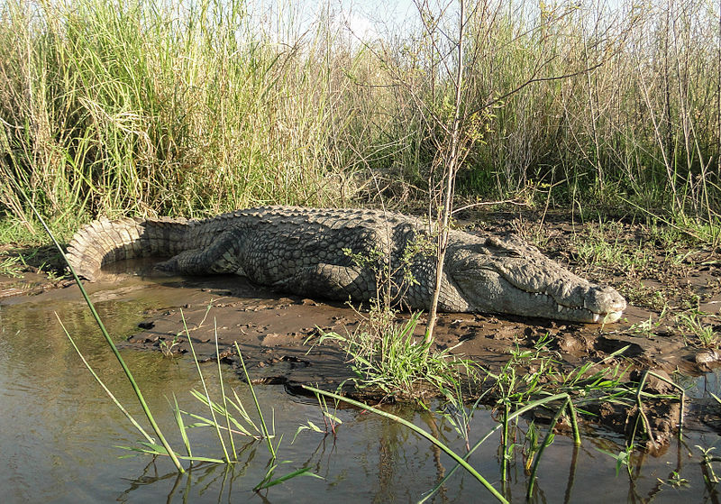
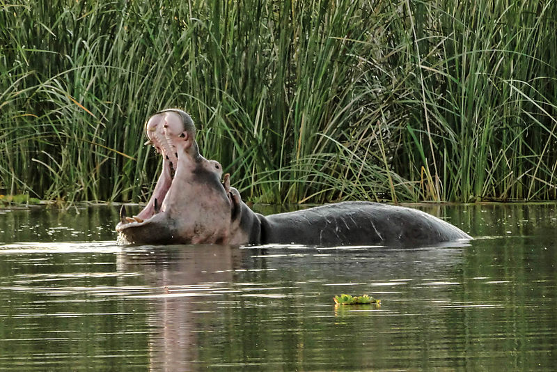
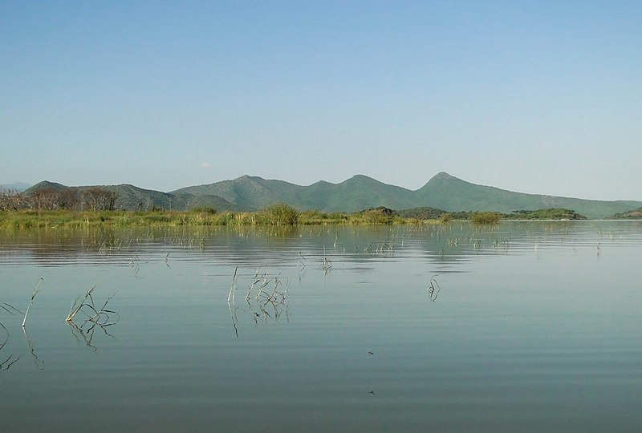
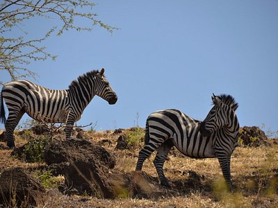
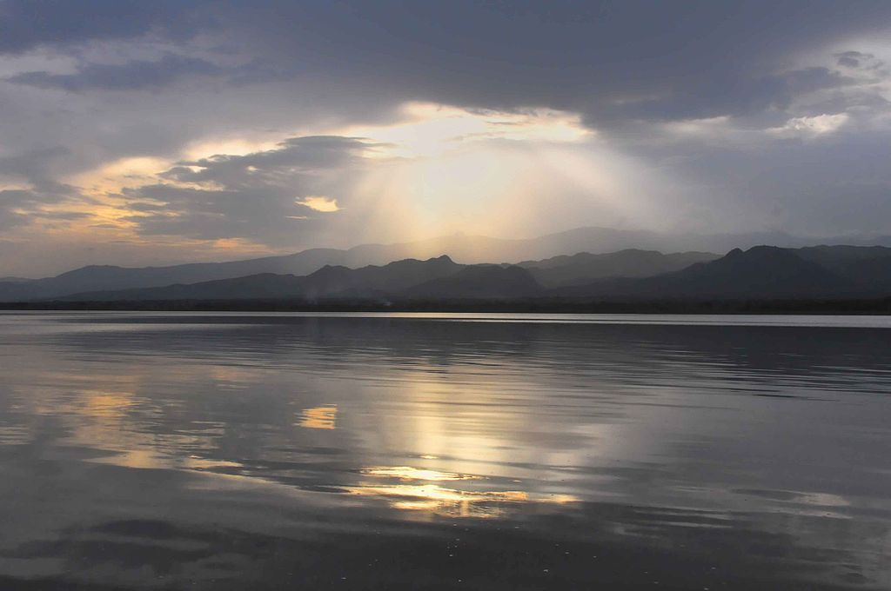
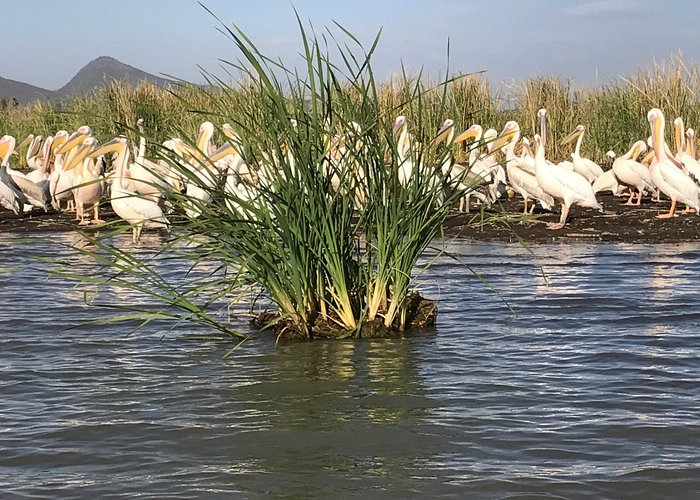

Nechisar is situated near Arba Minch, between Abaya and Chamo lakes. The stunning landscape and Guge Mountain have a spectacular view of the surrounding area. The narrow bridge connecting the lakes is called "bridge to heaven" due to the daring crossing journey. The shores and islands of Abaya and Chamo are inhabited by the Ganjule and the Guji ethnic groups. They practice hippo hunting and traditional cultivation affording visitors unforgettable experienceThe 750-square-kilometre (190,000-acre) park includes the "Bridge of God", an isthmus between Lake Abaya and Lake Chamo, and the Nechisar (English: white grass) plains east of the lakes. It is east of Arba Minch.
Park elevations range between 1,108 and 1,650 metres (3,635 and 5,413 ft) above sea level.[1] Nechisar National Park was established in 1974. Under the management of African Parks Network (APN since 2005, it was reportedly scheduled to hand over management to the Ethiopian government in June 2008.

Lake Abaya (Amharic: አባያ ሐይቅ) is a lake in the Southern Nations, Nationalities, and Peoples' Region of Ethiopia. It is located in the Main Ethiopian Rift, east of the Guge Mountains. The town of Arba Minch lies on its southwestern shore, and the southern shores are part of the Nechisar National Park. Just to the south is Lake Chamo. Savanna, known for its wildlife and birdlife, surrounds the lake, which is also fished by local people. According to the Ethiopian Department of Fisheries and Aquaculture, 412 tonnes of fish are landed each year, which the department estimates is 69% of its sustainable amount.[1] Lake Abaya is 60 kilometers long and 20 wide,[2] with a surface area of 1162 square kilometers.[3] There are a number of islands in this lake, the largest being Aruro;[4] others include Gidicho, Welege, Galmaka, and Alkali. The lake is red due to a high load of suspended sediments.[5] The lake is fed by three medium-sized rivers. First there is the Bilate which rises on the southern slopes of Mount Gurage, then runs mostly southward to drain into Lake Abaya at its northern shore. Second, there is the Gidabo, which rises on the western slopes of the Bale Mountains, then also runs mostly southwards to drain into Lake Abaya at its northeastern tip after having passed the Gidabo flood plains. A third river is the Gelana, which rises at the western escarpment of the Rift Valley northwest of Bule Hora Town. Tributary streams also rise on the eastern and northern slopes of the Amaro Mountains. The Gelana then flows northwards through the Gelana Graben in the middle between both mountain ranges before it enters the Bore swamps and finally drains on the eastern side into the lake. The only outflow of the lake is through the lower reaches of Kulfo River directly below an alluvial fan at an elevation of 1,190 m (at 6.0109°N 37.5854°E). The riverbed acts as an spillway in the case of high lake levels and discharges the excess water into Lake Chamo. Usually, the lake level oscillates somewhat, in 2017 it was at 1,175 m, 15 m below the overflow level.[6] In the last 50 years, the lake level oscillated only ±1.5 m around a mean value which is well below the overflow level.[7] Consequently, the maximum depth of the lake changes only slightly from year to year, in the year 2002 the lake had a maximum depth of 13.1 meters.[3]
Lake Chamo (Amharic: ቻሞ ሐይቅ) is a lake in the Southern Nations, Nationalities, and Peoples' Region of southern Ethiopia. Located in the Main Ethiopian Rift, it is at an elevation of 1,110 meters. The Chamo lake is just to the south of Lake Abaya and the city of Arba Minch, east of the Guge Mountains, and west of the Amaro Mountains.


Lake Chamo northern end lies in the Nechisar National
Park. According to figures published by the Central
Statistical Agency, it is 32 kilometers long and 13 wide, with
a surface area of 317 square kilometers and a maximum
depth of 14 meters with a catchment of about 18757 square
kilometers in size.
Other sources locate it on an
elevation of 1,235 meters with a length of 26 km a widths of
22 km an area of 551 square kilometers a catchment of 2220
square kilometers and a maximum depth of 10 meters.
The lake is fringed with beds of Typha, as well as wetlands.
It is fed by the Kulfo River and several small streams, as
well as overflow from Lake Abaya brought to it by the Ualo
River.
Oscar Neumann, exploring the area in 1901, found
a dry channel connecting Lake Chamo to the Sagan River,
which led him to conclude the lake contributes to the Sagan
in years of heavy rainfall.
Wildlife include fish like the catfish Bagrus docmak and
Nile perch, as well as hippopotamus and Nile crocodiles.